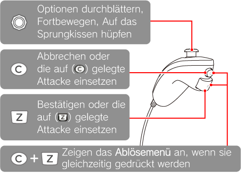

7 |
Verwendung des Controllers |
 |
|
Pokémon Rumble kann von bis zu vier Spielern gleichzeitig gespielt werden. Neben der Wii-Fernbedienung lässt sich das Spiel auch mit dem Nunchuk, dem Classic Controller und dem Nintendo GameCube Controller bedienen. Die Ausführungen in dieser Bedienungsanleitung konzentrieren sich hauptsächlich auf die Steuerung per Wii-Fernbedienung.
Hinweis: Wenn du das Spiel mit einem anderen Controller als der Wii-Fernbedienung bedienen möchtest, ziehe die Ausführungen auf Seite 18 zurate. Achtung: Spielst du allein, kann das Nunchuk nicht als Eingabegerät fungieren.
Steuerung mit der Wii-Fernbedienung Die Wii-Fernbedienung wird in waagerechter Ausrichtung in beiden Händen gehalten.
Steuerung mit einem anderen Controller Möchtest du mit einem Nunchuk oder einem Classic Controller spielen, muss der jeweilige Controller an die Wii-Fernbedienung angeschlossen werden. Wenn du mit einem Nintendo GameCube Controller spielen willst, solltest du ebenfalls darauf achten, dass er korrekt an die Wii-Konsole angeschlossen ist. Sobald dies geschehen ist, musst du noch die nötigen Einstellungen vornehmen. Der Ablauf ist dabei der gleiche, wie wenn du eine Mehrspielerpartie aufsetzen möchtest (siehe S. 18: Wie du eine Mehrspielerpartie aufsetzt).
Wenn du ein Nunchuk oder einen Nintendo GameCube Controller an deine Wii-Fernbedienung anschließt, kann über diesen Zusatzcontroller ein weiterer Spieler an der Partie teilnehmen.
Vorsicht! Die Wii-Fernbedienung und das Nunchuk sollten während des Spiels nicht auseinandergezogen werden. Wird die Kabelverbindung unnötig stark belastet, könnte sie sich lösen und eine Person oder einen Gegenstand treffen. Dies kann zu Unfällen führen, bei denen Menschen verletzt oder Haushaltsgegenstände beschädigt werden.
Steuerung mit dem Nunchuk Spielst du Pokémon Rumble allein, kann das Nunchuk nicht als Controller verwendet werden. Nehmen zwei oder mehr Spieler an der Partie teil, muss das Nunchuk zuvor an die Wii-Fernbedienung angeschlossen werden. Mit dem Nunchuk ist es des Weiteren nicht möglich, das Pausenmenü aufzurufen oder einen Favoriten unter seinen Pokémon zu bestimmen. 
Steuerung mit dem Classic Controller Steuerung mit dem Nintendo GameCube Controller |
 |
 |
 |